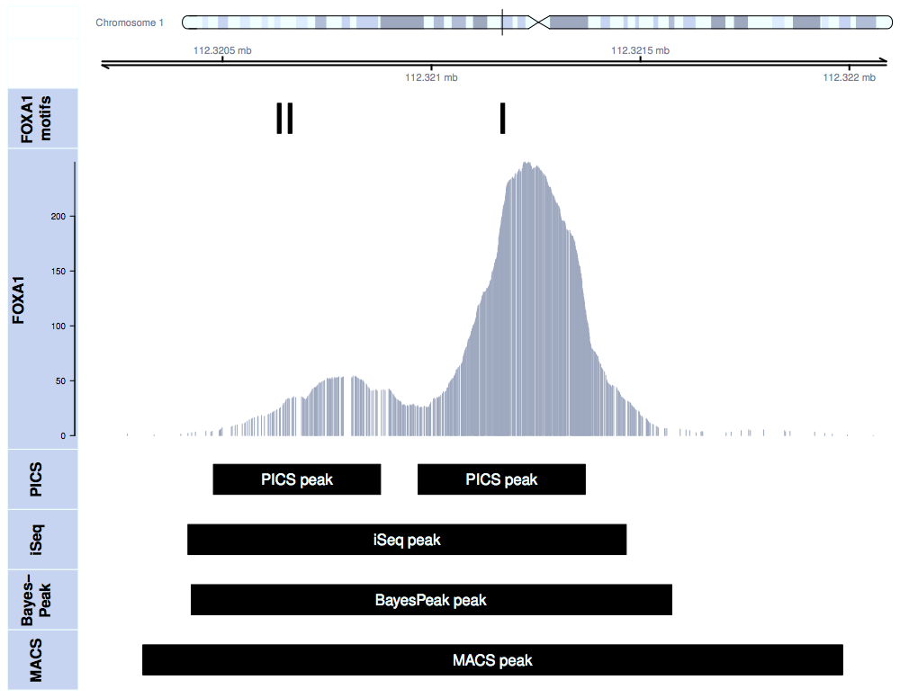

What do we do?
Our main research interest is the development of cutting edge statistical methods and software tools for the analysis of high throughput biological data with an emphasis on immunology and vaccine research. Please use the tab navigation below to learn more about specific active research projects in the lab.We do research on new statistical methods for analysing flow cytometry data, including methods for determining vaccine positivity, automated and semi-automated gating and data analysis pipelines, as well as quality assurance and quality control.
Our group researches advanced statistical modeling techniques to improve the power to detect antibody epitopes using peptide microarray experiments. We aim to develop flexible, robust methodology that shares relevant information between subjects while accommodating aspects of experiments that are unique to immunological applications. We are also developing a unified software environment to streamline data analysis from preprocessing up through detection and visualization. Our methodology is currently being applied to many vaccine trials including the human and non-human primate studies.
The two figures below show an application of our analysis and visualization pipeline applied to the RV144 pilot microarray data published in AIDS Research and Human Retroviruses.

{kind=link}
-
Single-Cell Gene Expression and Positivity
Subject-specific differences as well as stimulation-specific common patterns in single-cell gene expression are observed between differentially stimulated, tetramer-sorted cell subpopulations. The data was analyzed using our new MIMOSA (Mixture Models for Single-Cell Assays) tool.
{kind=link}
We collaborate with bench scientists and clinicians throughout multiple networks including the HIV Vaccine Trial Network, the Microbicide Trial Network, the Immune Tolerance Network and the Human Immunology Project Consortium.
For the past decade, microarrays have been the platform of choice for various high-throughput biological studies. In fact, our group has significantly contributed to the development of statistical methods for microarray data. Recent improvements in the efficiency, quality, and cost of genome-wide sequencing are prompting biologists to rapidly abandon microarrays in favor of so-called next-generation sequencers. Next-generation sequencing technologies, capable of producing tens of millions of sequence reads during each instrument run, have already been applied for studying genome-wide transcription levels (RNA-Seq), transcription factor binding sites and nucleosome positioning (ChIP-Seq), and DNA methylation status. While sequencing-based studies have been promoted as overcoming longstanding limitations of microarray-based studies, these new biotechnologies raise similar as well as novel statistical and computational challenges. These sequencing technologies generate massive data sets (much larger than with microarrays), and there is a pressing need for statistical and computational tools to make sense of these data. To this end, our group has developed several methods for the analysis of ChIP-Seq and MNase-Seq data. The Figures below illustrate our analysis pipeline using PICS, rGADEM, MotIV and PING.
-

PICS increases spatial resolution of binding event detection
Transcription factor binding sites identified by PICS, iSeq, BayesPeak and MACS. PICS identifies two binding events in this region while other three methods identify these two events as one broad enriched region.
-
PING identifies weakly positioned nucleosomes.
Expected Nucleosome positioning in Chr1 for 149000-153000 genomic region using PING and TpF. PING can identify nucleosome positioning with weak signal compared to TpF.
{kind=link}
{kind=link}